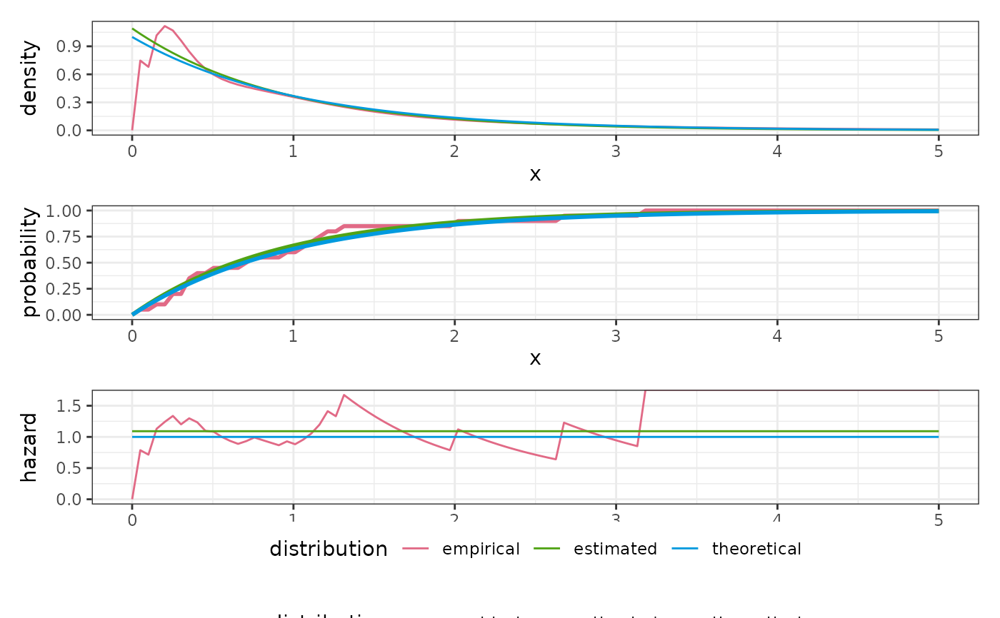

Plot several distributions
distribution objects (must be named)
Named list of distribution objects.
This is concatenated with ....
Numeric vector of points to evaluate at.
Plots to be created. May be abbreviated. The plots will be stacked in the order given from top to bottom.
list of distribution parameters to be given to each
distribution using with_params. If named, the names are matched to the
distribution names. Otherwise, they are allocated positionally, index 1
corresponding to the first element of distributions, then all other
elements from distributions followed by the arguments in ... in order.
return a list of ggplots instead of a patchwork?
A stacked patchwork of the requested ggplots
rate <- 1
x <- rexp(20, rate)
d_emp <- dist_empirical(x, positive = TRUE)
d_exp <- dist_exponential()
plot_distributions(
empirical = d_emp,
theoretical = d_exp,
estimated = d_exp,
with_params = list(
theoretical = list(rate = rate),
estimated = list(rate = 1 / mean(x))
),
.x = seq(1e-4, 5, length.out = 100)
)
#> Warning: Removed 46 row(s) containing missing values (geom_path).
